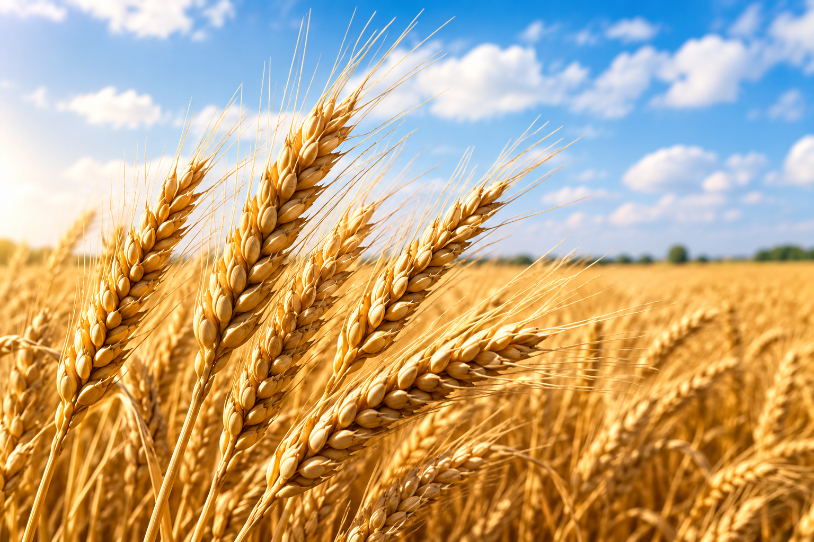
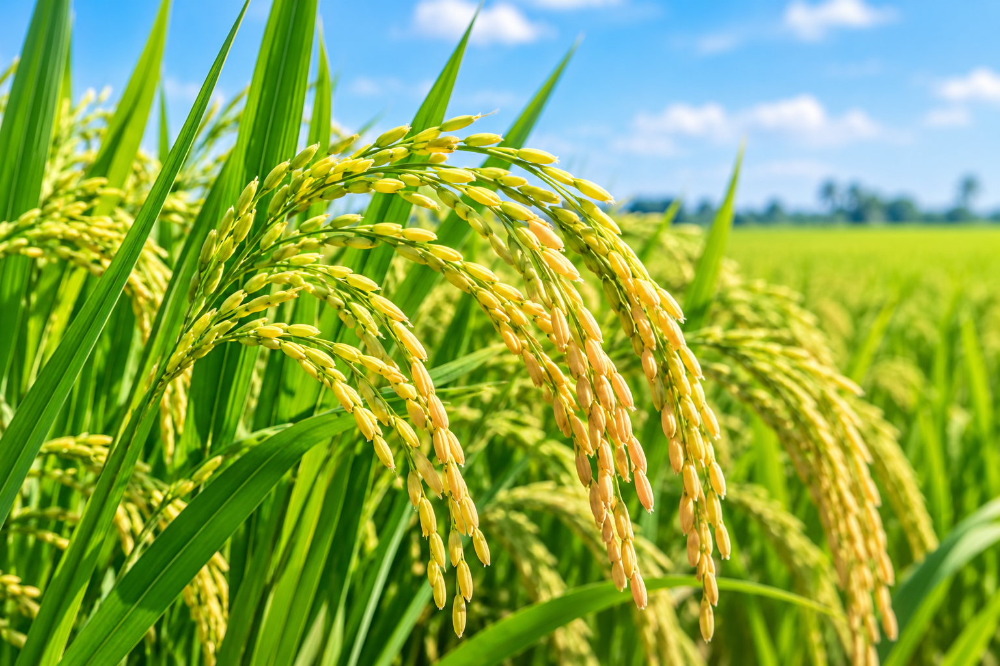
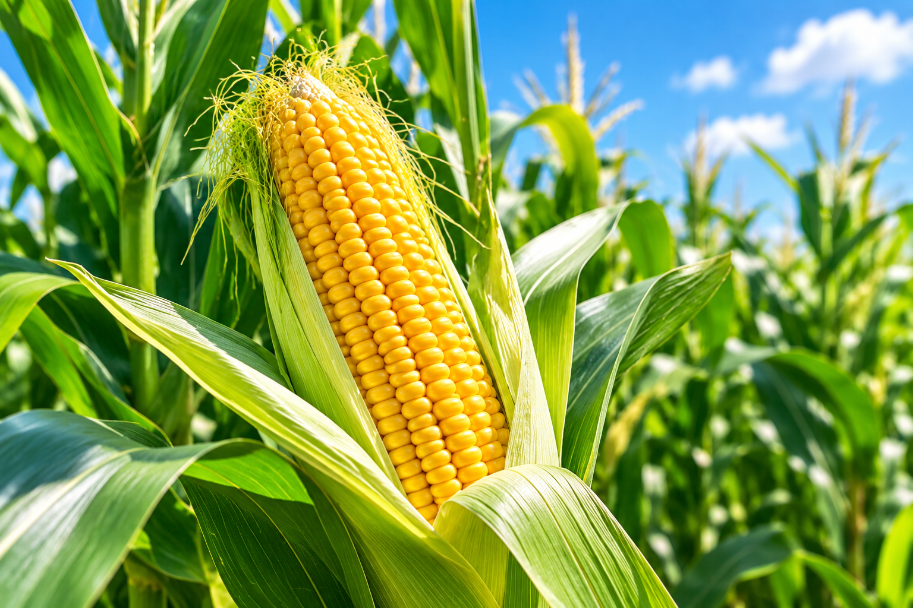
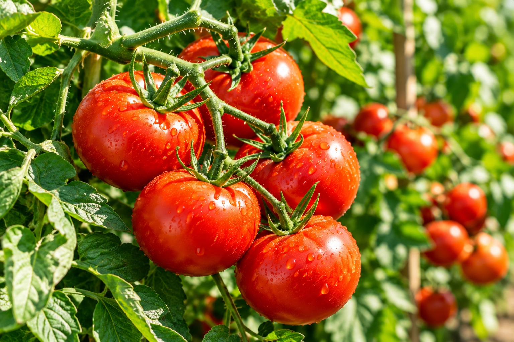
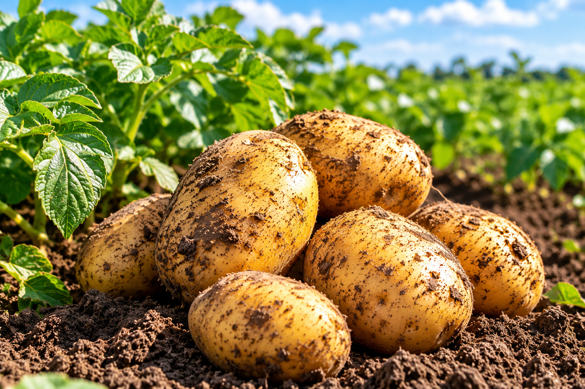
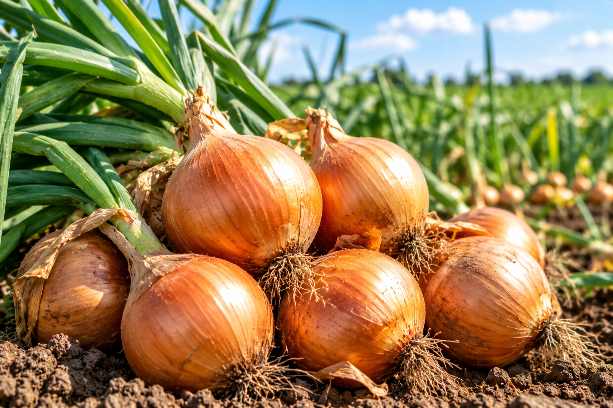
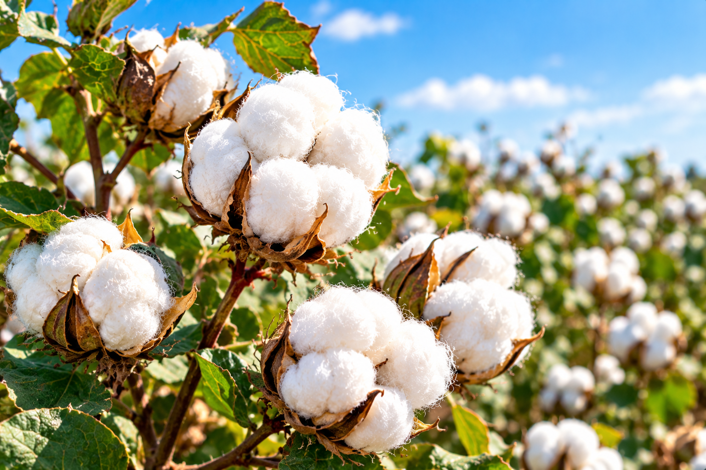
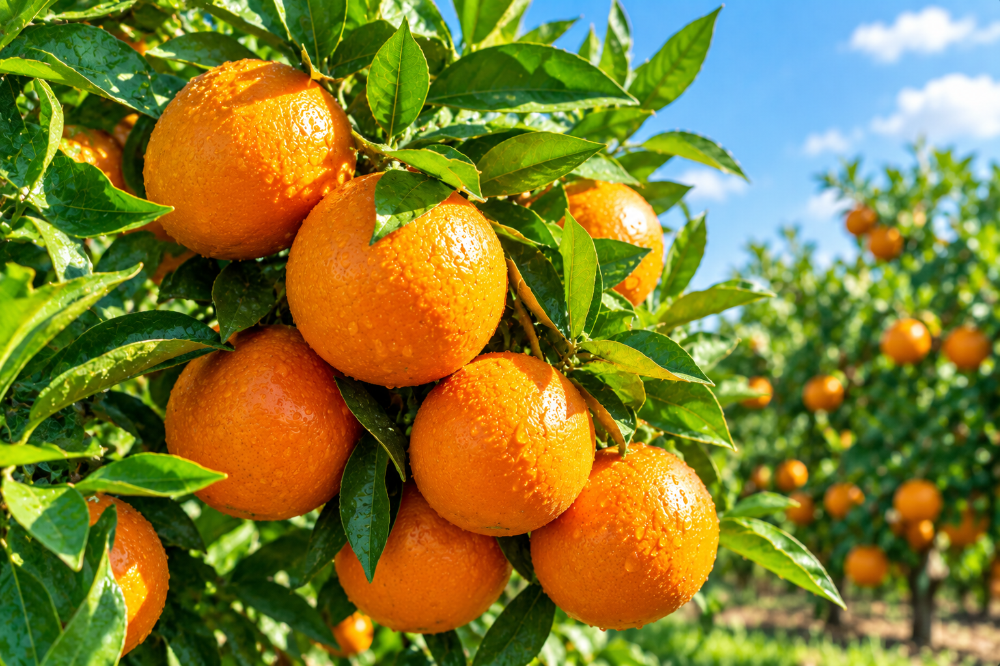

تعرف على أهم المحاصيل الزراعية ومعلومات أساسية عنها

من أهم المحاصيل الشتوية ويستخدم في إنتاج الدقيق والخبز.

من المحاصيل الغذائية المهمة ويحتاج إلى كميات مناسبة من المياه.

محصول صيفي مهم يستخدم في الغذاء والأعلاف والصناعات المختلفة.

من أشهر محاصيل الخضر وتزرع في مواسم مختلفة.

محصول مهم من محاصيل الخضر ويستخدم في العديد من الأطعمة.

من المحاصيل المهمة للاستهلاك المحلي والتصنيع والتصدير.

من المحاصيل الاقتصادية المهمة ويتميز بجودة أليافه.

تشمل البرتقال واليوسفي والليمون وتعد من أهم محاصيل الفاكهة.